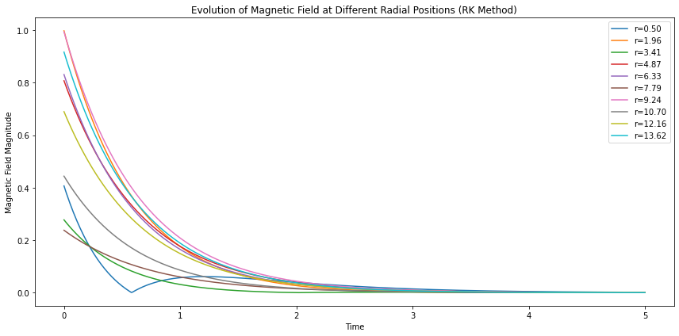

Introduction
Galaxy magnetohydrodynamics (MHD) stands at the forefront of astrophysical exploration, delving into the intricate dynamics governing the interplay between magnetic fields and ionized gas within galaxies. Spanning a magnetic field intensity spectrum from microgauss to milligauss, these magnetic fields permeate galaxies, wielding a profound influence on the intricacies of the interstellar medium. The theoretical underpinning of MHD relies on a sophisticated framework of equations, amalgamating the principles of fluid dynamics and electromagnetism. Within this framework, the complex interaction of magnetized plasmas in galactic environments unfolds, driven by dynamo processes fueled by fluid motions like turbulence and differential rotation.
Observationally, the arsenal of techniques in galactic magnetohydrodynamics includes polarimetry and synchrotron emission, critical tools for scrutinizing the distribution, structure, and strength of magnetic fields spanning diverse regions within galaxies. The invaluable insights derived from these observations contribute substantially to our understanding of pivotal astrophysical processes, from the genesis of stars to the initiation of galactic winds. Despite the intricate dance of magnetized plasmas introducing challenges, the field perseveres with ongoing advancements in observational methodologies and numerical simulations. These endeavors progressively deepen our insights, casting an illuminating beam on the evolutionary odyssey of galaxies throughout the vast cosmos.
Galactic Magnetic Fields
Galactic magnetic fields are intricate and omnipresent phenomena that wield profound influence over the structural, dynamic, and evolutionary aspects of galaxies. Beyond merely shaping the cosmic landscape, these magnetic fields play a pivotal role in orchestrating a myriad of astrophysical processes, ranging from the intricate dance of star formation to the intricate ballet of cosmic ray propagation. The intricate interplay between these magnetic fields and the cosmic environment is crucial for unraveling the intricate tapestry of the broader astrophysical context.
On a grand scale, large-scale magnetic fields extend their dominion over vast cosmic territories, traversing thousands of light-years within galaxies. These expansive fields reveal a remarkable tapestry of coherence and organization, weaving intricate patterns that extend their influence over the behavior of charged particles populating the interstellar medium. Understanding the nuances of these large-scale structures entails delving into the intricate mechanisms governing magnetic field generation, meticulous maintenance, and the consequential impact on the dynamic ballet of galactic processes. As we delve deeper into the study of galactic magnetic fields, we embark on a journey to unravel the mysteries that govern the cosmic choreography within the vast and mesmerizing realms of the universe.
Galactic Dynamo Theory
Galactic dynamo theory serves as a cornerstone in explaining the amplification and maintenance of galactic magnetic fields. Dynamo processes involve the conversion of kinetic energy from fluid motions within a galaxy into magnetic energy. The theoretical foundation of dynamo theory is rooted in the magnetohydrodynamic (MHD) equations, which describe the behavior of electrically conducting fluids, such as the ionized gas present in the interstellar medium.
Mathematically, the evolution of the magnetic field (\( \mathbf{B} \)) in a galactic environment can be expressed through the induction equation:
\[ \frac{\partial \mathbf{B}}{\partial t} = \nabla \times (\mathbf{v} \times \mathbf{B} - \eta \nabla \times \mathbf{B}) \]- When \( \eta \) is much larger than 1 (\( \eta \gg 1 \)): \[ \frac{\partial \mathbf{B}}{\partial t} \approx -\eta \nabla^{2}\mathbf{B} \] In this scenario, the evolution of the magnetic field (\( \mathbf{B} \)) is predominantly governed by magnetic diffusion. Large \( \eta \) values lead to rapid dissipation of magnetic field structures, resulting in a diffusion-dominated regime.
- When \( \eta \) is much smaller than 1 (\( \eta \ll 1 \)): \[ \frac{\partial \mathbf{B}}{\partial t} \approx \nabla \times (\mathbf{v} \times \mathbf{B}) \] In this regime, the induction equation is primarily influenced by the advective and rotationalterms (\(\mathbf{v} \times \mathbf{B} \)), with magnetic diffusion playing a minor role. Smaller \( \eta\) values allow magnetic field structures to evolve more freely.
To provide a concrete example, let us consider the mean-field dynamo theory, which describes the evolution of the mean magnetic field \(\overline{B}\) and the small-scale magnetic fluctuations (\( \mathbf{b} \)). The governing equations are given by:
\[ \frac{\partial \overline{B}}{\partial t} = \nabla \times (\overline{\mathbf{v}} \times \overline{B} + \boldsymbol{\mathcal{E}} - \eta( \nabla \times \overline{B})) \]
where \(\boldsymbol{\mathcal{E}} \approx \overline{{v} \times \mathbf{b}}\).
The mean field induction equation lies at the heart of galactic magnetohydrodynamics, describing the evolution of the mean magnetic field with a nuanced interplay of forces. The term \( \frac{\partial \overline{\mathbf{B}}}{\partial t} \) delineates the temporal changes in the mean magnetic field, shaped by intricate interactions. The component \( \nabla \times (\overline{\mathbf{v}} \times \overline{\mathbf{B}}) \) embodies the induction driven by fluid motions, contributing to the amplification of the mean magnetic field. Additionally, the electromotive force \( \mathbf{E} \) introduces complexity, arising from turbulent motions within the galactic medium.
However, the term \( - \eta \nabla \times \overline{\mathbf{B}} \) introduces magnetic diffusion, where \( \eta \) represents the magnetic diffusivity. In scenarios with a significantly large \( \eta \), magnetic diffusion dominates, resulting in a damping effect on variations in the mean magnetic field. Conversely, when \( \eta \) is small, the influence of magnetic diffusion diminishes, allowing fluid motions and turbulent processes to exert a more pronounced role in shaping the evolution of the mean magnetic field. This delicate balance between induction, electromotive forces, and magnetic diffusion intricately governs the behavior of galactic magnetic fields, revealing the captivating dynamics within the vast cosmic landscape.
Example of the mean field dynamo behaviour

Methods
These are some numerical methods to solve any differential equation
Time-Stepping Routine: Explicit Euler Method
In numerical simulations, the explicit Euler method is a simple time-stepping algorithm. It updates the solution at each time step using the formula:
Here:
- \( u_{n+1} \) is the solution at the next time step.
- \( u_n \) is the solution at the current time step.
- \( \Delta t \) is the time step size.
- \( f(u_n, t_n) \) represents the derivative of \( u \) with respect to time at \( t_n \).
Finite Differencing Routine: Central Difference Scheme
In numerical simulations, the central difference scheme is a finite differencing method used to approximate second-order spatial derivatives. For a function \( u \) with respect to space (\( x \)), the central difference formula for the second derivative is given by:
Here:
- \( u_{i+1} \) is the value at the grid point to the right.
- \( u_i \) is the value at the current grid point.
- \( u_{i-1} \) is the value at the grid point to the left.
- \( \Delta x \) represents the spatial grid spacing.
Runge-Kutta Method
The Runge-Kutta method is a widely used numerical technique for solving ordinary differential equations (ODEs). It provides a more accurate solution compared to simpler methods like Euler's method. The fourth-order Runge-Kutta method, denoted as RK4, is particularly popular due to its balance between accuracy and computational efficiency.
The general formulation of the RK4 method involves four steps:
Here, \(x_n\) and \(y_n\) are the current values of the independent and dependent variables, respectively. \(h\) is the step size, and \(f(x, y)\) is the given function defining the ODE. The RK4 method offers a good compromise between accuracy and computational efficiency, making it suitable for a wide range of applications.
The method is particularly valuable in physics, engineering, and other fields where differential equations model dynamic systems. Its efficiency comes from the iterative nature of the calculations, allowing for the approximation of complex solutions. Researchers and engineers often use RK4 when analytical solutions are difficult or impossible to obtain.
In conclusion, the Runge-Kutta method, especially RK4, is a powerful numerical tool for solving ordinary differential equations. Its accuracy and efficiency make it a staple in the computational toolbox of scientists and engineers, contributing to advancements in various scientific disciplines.
Some other numerical methods
1. Adams-Moulton Method (Predictor-Corrector)
Description: Adams-Moulton is an implicit predictor-corrector method. It predicts the next value using the Adams-Bashforth method (explicit), then corrects it using implicit methods. It strikes a balance between stability and accuracy.
Use: Suitable for stiff ODEs and situations where implicit methods are preferred for stability.
2. Fourth-Order Runge-Kutta (RK4)
Description: RK4 is a widely used explicit method. It involves four evaluations per step, calculating a weighted average of slopes to approximate the next value. RK4 is known for its simplicity and good accuracy.
Use: A general-purpose method suitable for a wide range of ODEs, offering a good compromise between accuracy and computational cost.
3. Adams-Bashforth Methods
Description: Adams-Bashforth methods are explicit multi-step techniques. They predict the next value using a weighted sum of previous function values and their derivatives. Higher-order methods provide increased accuracy.
Use: Effective for non-stiff ODEs when historical data is available for prediction.
4. Implicit Methods (e.g., Backward Euler)
Description: Implicit methods involve solving equations at each step, making them more stable for stiff ODEs. Backward Euler is an implicit method where the derivative at the endpoint of the step is used for prediction.
Use: Preferred for stiff ODEs where stability is crucial, and implicit solutions are necessary.
Results
These are some of the results of solving the diffusion equation.
Solving the diffusion equation in r (under the no-z approximation)
Exploring the evolution of the spatial solution for Br and Bφ, and of the pitch angle of the mean magnetic field p.

Exploring how different boundary conditions affect the magnetic field with r.
Explore how different seed fields affect the magnetic field plort with r.
Solving the α-Ω dynamo eqaution using the no-z approximation
To demonstrate the amplification of magnetic energy through the coupling of α and Ω terms in our equation, we include them as follows:
\[ \frac{\partial B_r}{\partial t} = -\frac{\partial}{\partial z} (\alpha B_{\phi}) + \eta_t \left[ \frac{\partial}{\partial r} \left( \frac{1}{r} \frac{\partial}{\partial r} (r B_r) \right) + \frac{\partial^2 B_r}{\partial z^2} \right], \]
\[ \frac{\partial B_{\phi}}{\partial t} = -q\Omega B_r - \eta_t \left[ \frac{\partial}{\partial r} \left( \frac{1}{r} \frac{\partial}{\partial r} (r B_{\phi}) \right) + \frac{\partial^2 B_{\phi}}{\partial z^2} \right] \]
We assume α to be constant, while Ω has the functional form:
\[ \Omega = \Omega_0 \sqrt{1 + \left( \frac{r}{R_0} \right)^2} \]For this study, we fix α, Ω₀, and R₀ to constant values. So we used the above equations and the results are below.
Solving the alpha-omega differential equation w.r.t time
Solving the alpha-omega differential equation w.r.t distance

Variation with different values of dynamo number
Finding the Critical dynamo number
Calculating the growth rate of the curve
Conclusions
...................Final work is still remaining, it will be completed at the time of final submission.......................